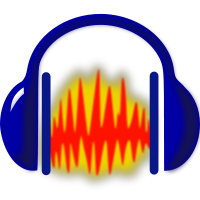

La captura de audio en un ordenador consiste en activar la grabadora de sonidos y el micrófono.
Una vez capturado, modificar los parámetros de un archivo de sonido digital, cortar y combinar distintos archivos, es una tarea fácil que se realiza mediante programas de edición de audio.
|

|
Para continuar usando programas con licencia de software libre, se ha elegido el programa Audacity para la edición de audio. Es un editor sencillo que trabaja con archivos wav, mp3 y ogg. |
|
Img 23. Logo Audacity
bajo licencia GPL |